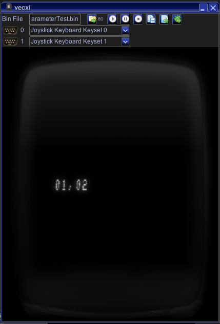

If you write programs in C you might at some stage nonetheless need to access assembler code. You can do that quite seamlessly in Vide.
There are still a couple of things to know about accessing assembler code.
Usually when programming in assembler vide assembles all sources using its internal assembler "assi". The syntax used in assi is very similar to the kingswood assembler - for exact syntax and pseudo opcodes see → assi!
The "C" variant supported in Vide uses due to a couple of different reasons (not explained here) a different assembler, namely as6809 (assembler package programmed by Alan R. Baldwin). The syntax is a bit different from assi - for exact definitions and pseudo opcodes, please look at the the documentation of that assembler (http://shop-pdp.net/ashtml/asxxxx.php).
Note:
Using the process described in "Building own libraries" you can ask Vide to automatically translate sources written for assi to assembler sources compatible with as6809.
All "*.s" sources within the directory tree under "source" will automatically be assembled upon a build of your project and linked to it.
If you use direct page accesses in your assembler sources, the linker will give a warning message, since it suspects something is wrong:
?ASlink-Warning-PageN relocation error
You can circumvent that warning by telling the assembler (and thus the linker) that you have everything under control. An example for a "controlled" direct page access of via would be an assembler line like (before you do the dp access):
.setdp 0xd000,_DATA
Due to the way the "C" setup in Vide works - all sources must be relative in nature. Meaning you should not use in any way fixed memory addresses (neither ROM nor RAM, again see: "Building own libraries").
In order to access your assembler code, it must be known to "C".
On the "C" side you probably do an include of some sort - but at least you have to declare a function (or variables) as "extern".
On the assembler side you have to declare your function (or variable) as global, pseudo opcode ".globl".
Note:
If you declare functions/variables as global, the name on the "assembler side" must start with an underscore "_". On the "C" side you use the variables without the underscore.
the first 8bit parameter is always put into register b
the first 16bit parameter is always put into register x
each additional parameter is put onto the stack, the last parameter in the list of additional parameters is put first unto the stack, all other parameters follow in the order from last to first. This means to access the last parameter you have to use a greater offset on the stack.
Examples:
"C": extern void function(int b);
...
function(1);
→
"asm": ldb #$01
jsr _function
"C": extern void function(int b, long x);
...
function(1,2);
→
"asm": ldx #$02
ldb #$01
jsr _function
"C": extern void function(long x, int b);
...
function(1,2);
→
"asm": ldb #$02
ldx #$01
jsr _function
"C": extern void function(int b, int z, long x);
...
function(1,2,3);
→
"asm": ldb #$02
stb ,-s
ldx #$03
ldb #$01
jsr _function
"C": extern void function(int b, int z, long x, long y);
...
function(1,2,3,4);
→
"asm": ldx #$04
pshs x
ldb #$02
stb ,-s
ldx #$03
ldb #$01
jsr _function
"C": extern void function(int b, int z, long x, long y, int e);
...
function(1,2,3,4,5);
→
"asm": ldb #$05
stb ,-s
ldx #$04
pshs x
ldb #$02
stb ,-s
ldx #$03
ldb #$01
jsr _function
8 bit return values are always expected in register b
16 bit return values are always expected in register x
Examples:
"C": extern int function();
...
a = function();
→
"asm": jsr _function
stb >_a
"C": extern long function();
...
a = function();
→
"asm": jsr _function
stx >_a
#include <vectrex.h>
extern void printNumberPair(unsigned x, unsigned y, long twoNumbers);
int main(void)
{
while(1)
{
Wait_Recal();
printNumberPair(0xd0, 0x20, 0x0102);
}
return 0;
}
.module printnumber.s
.area .text
VIA_cntl = 0xD00C ;VIA control register
Moveto_d = 0xF312
Print_Str = 0xF495
;***************************************************************************
; Variable / RAM SECTION
;***************************************************************************
.area .bss
_tmp_debug: .blkb 6
.area .text
;***************************************************************************
; CODE SECTION
;***************************************************************************
; number in x
; location in d
.globl _printNumberPair
_printNumberPair:
lda ,s ; complete the location in d
pshs x ; save the numbers
jsr Moveto_d
lda ,s
lsra
lsra
lsra
lsra
adda # "0'
cmpa # "9'
ble ok11
adda #( "A'-"0'-10)
ok11:
sta _tmp_debug
lda ,s
anda #0xf
adda # "0'
cmpa # "9'
ble ok21
adda #( "A'-"0'-10)
ok21:
sta _tmp_debug+1
lda # ","
sta _tmp_debug+2
lda 1,s
lsra
lsra
lsra
lsra
adda # "0'
cmpa # "9'
ble ok31
adda #( "A'-"0'-10)
ok31:
sta _tmp_debug+3
lda 1,s
anda #0xf
adda # "0'
cmpa # "9'
ble ok41
adda #( "A'-"0'-10)
ok41:
sta _tmp_debug+4
lda #0x80
sta _tmp_debug+5
ldu #_tmp_debug
jsr Print_Str
LDB #0xCC
STB VIA_cntl
puls d
rts

test result